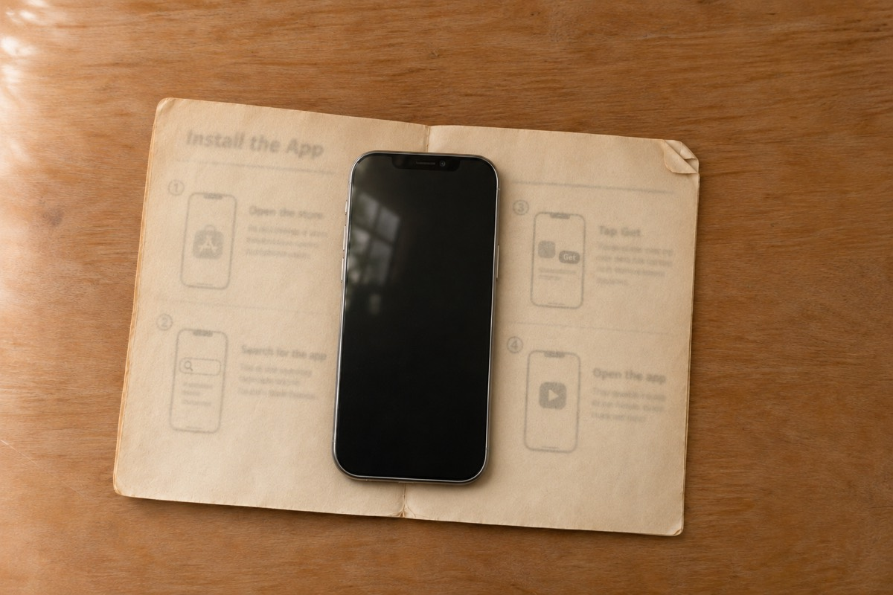
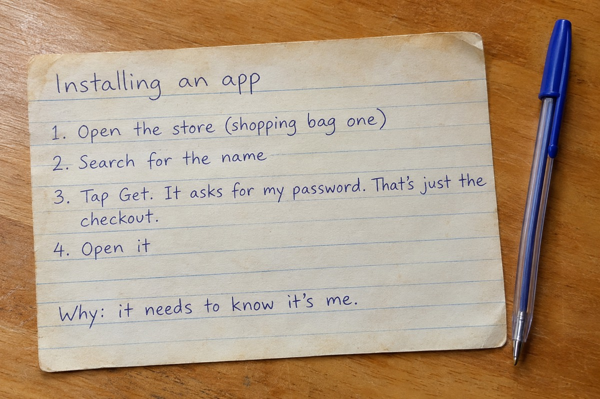

Manual explains what's actually in front of you, and why it works that way. It waits for you to try first, and steps back as you need it less.

I'm stuck.
You
Want to try first? I'll stay quiet unless you ask.
Manual
It's asking me to make an account. Why does it need that for a free app?
You
Think of the supermarket checkout. The account is how the store knows it's you, even when you're not paying for anything.
Manual
So where do I do that?
You
The blue button near the bottom, the one that says Continue.
Manual
Found it.
You
I'll remember the checkout idea for next time.
Manual
We're still building it. Joining the waitlist puts you first in line for early versions.
Write to you when there's something to try. No one else gets it, and you can reply anytime to be removed.
No. It's designed to see or hear only when you turn it on, and you choose what to share.
Hi, I'm Jia, a graduate student at Stanford's Learning, Design and Technology. After sitting in on tech tutor classes, interviewing people learning their phones, and the family and tutors who help them, I found that two things kept coming up. Learners follow every step in class, get home, and their screen doesn't look like the handout. Or after a one-off step-by-step help, learners don't get to practice and never have a chance to build a mental model into their memory.
This project is my attempt at creating a "manual" that phones never came with. Questions, stories: jyl668@stanford.edu

Setup note, only you see this until it's done:
fill in FORM_ID and ENTRY_EMAIL at the bottom of this file.
Thanks, you're on the list.